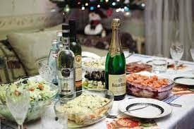

Еда - самое главное на новый год. Конечно можно и приготовить стандарт(оливъе, мандарины, икра, закуски, сaлатики, мясо, красная риба и шампанское). Но я вам предлагаю другой стандарт от меня.
#1 ФАРШИРОВАНАЯ ЩУКА.Вам нужна щука.Потрошите её и ОЧЕНЬ чательно промойте водой.Далее стяните кожу так, чтоби не порвать её.Основное мясо пустите в мясорубку, добавте специи и мелко нарезаную морковку.Перемешайте.Нашей начинкой фаршируем кожу щуки и ставим в духовку(время и градусы выбирайте сами, по мощности духовки).
#2 ПЕЛЬМЕНИ С ЗАЙЦЕВ.Делаем их как обычные пельмени, только вместо фарша свинины или ещё чего-то используем тушку зайца.
#3 КАРАМЕЛИЗИРОВАНАЯ ГРУША КАК ДЕСЕРТ.Для этого нам нужно:груша, сахар, ну и всё.Кидаем сахар в сатеник и доводим до карамели.Далее насаживаем грушу на шпашку и "купаем" в карамели и окунаем в холодную воду.И всё готово.
#4 БЕЗГОЛОВЫЙ НОВОГОДНИЙ ДУХ.
Возьмите фрукти:банан и мандарин.Из банана сделайте живот и шею и закрепите шпашками, из мандарин сделайте ноги и руки, которые тоже закрепите шпашками.Доожен получиться безголовый человечек из фруктов.Надeюсь, что я этим сайтом я хоть как-то помог подготовится к новому году.
СПАСИБО ЗА ВНИМАНИE!!!!!